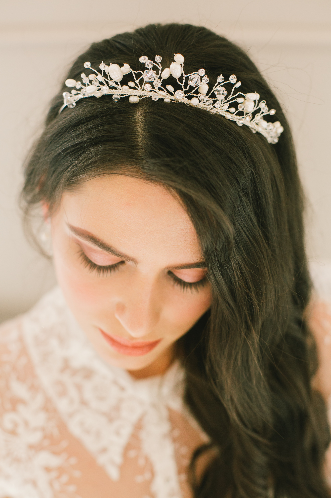
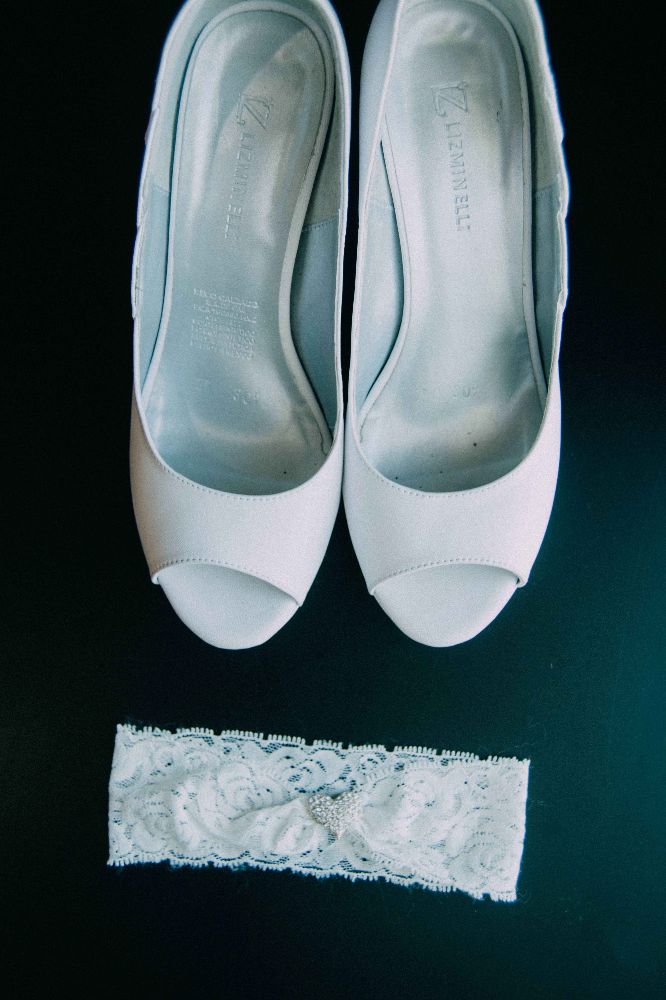
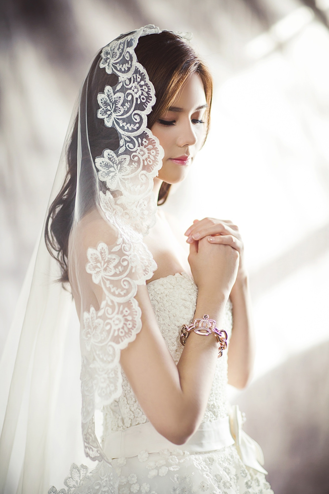
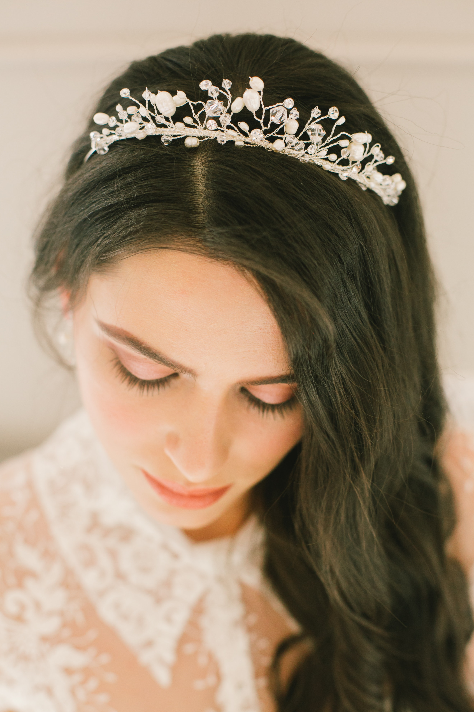
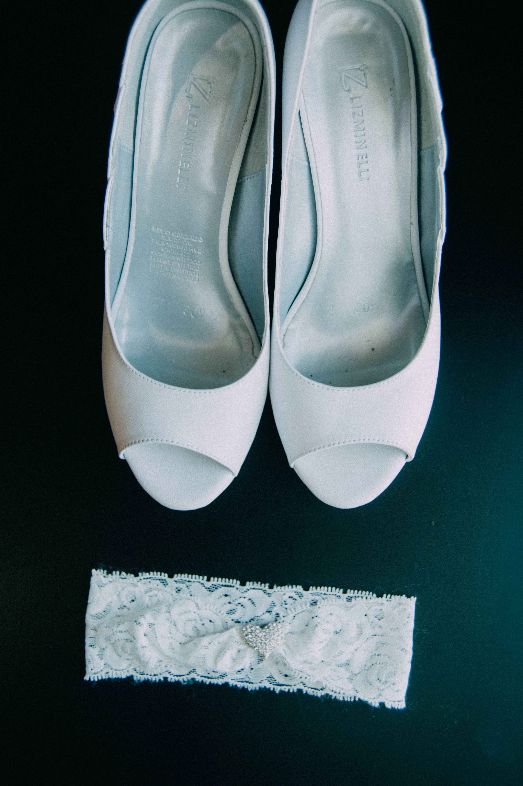
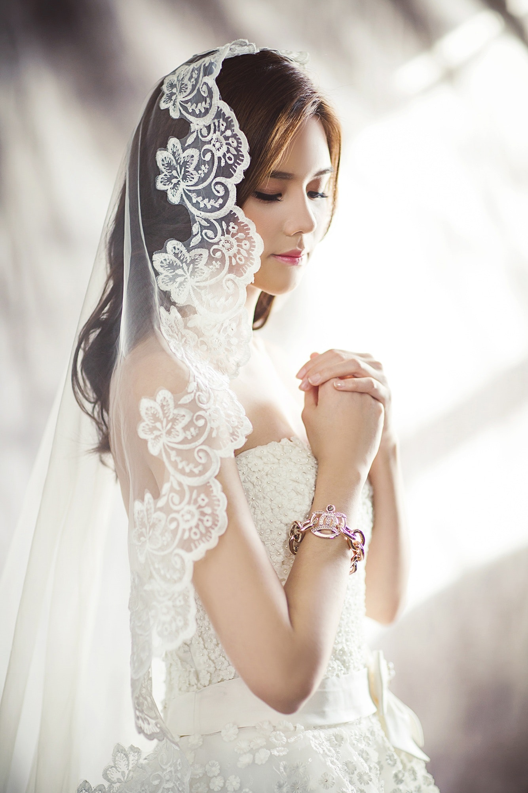
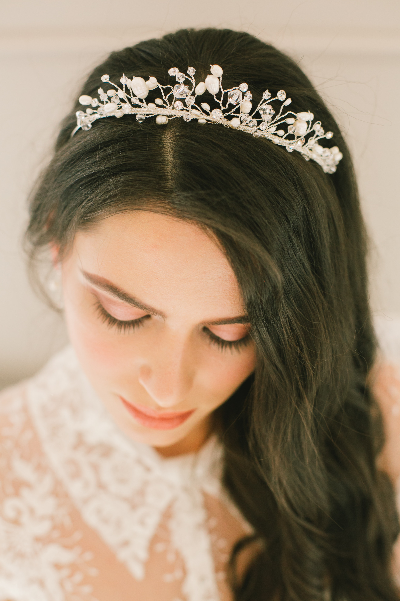
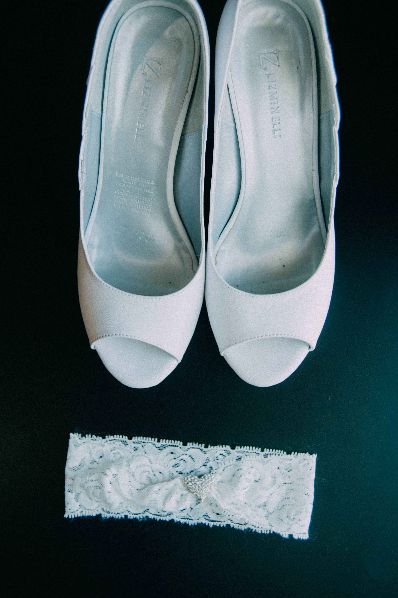
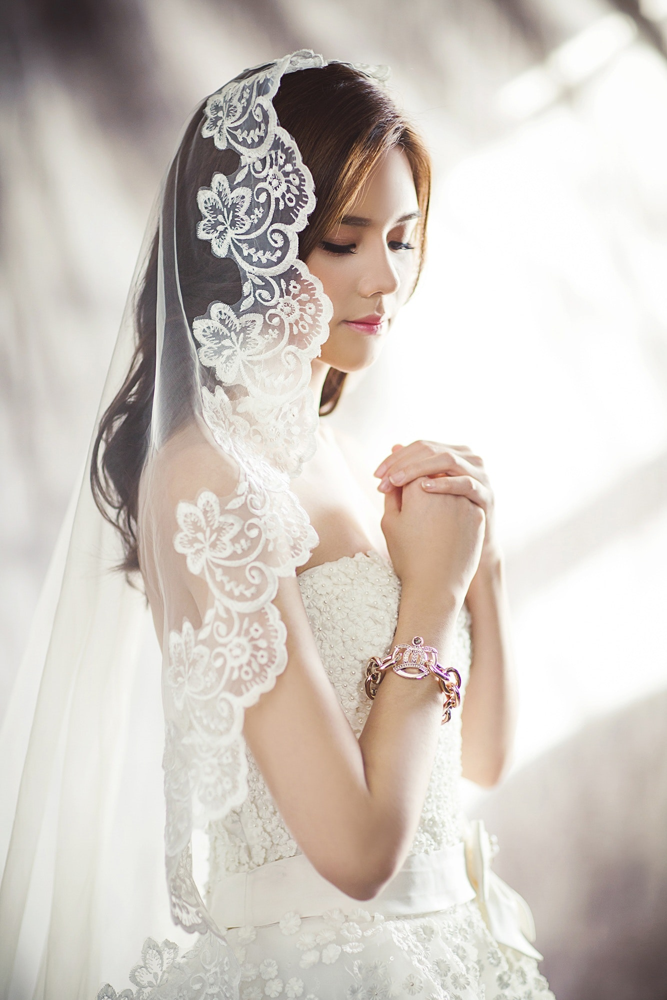

At Rosario Bridal Boutique we can provide shoes for you to use when trying on your selection of dresses during your appointment. However, you are more than welcome to bring your own shoes if you have already picked them out or have another similar pair at home. Top tip: we do suggest a similar height to the ones you intend to wear on the day.
We also sell a selection of veils, tiaras, hair accessories and garters available for trying on with your dress and also purchasing.
We do offer VIP appointments which includes:
A bottle of bubbly (which you can either drink or take with you!)
Luxury canapes - vegetarian/vegan options available
A longer 2 hour appointment to try on more dresses
Photo props for extra laughs
£50 voucher towards your dress
Free dress storage
2 extra guests at your appointment (1 bride & 4 guests)
Need some alterations to your dress? No problem, we work closely with a team of local seamstresses who can do home visits or will be more than happy for you to book an alteration appointment at their studio.
You will be given all this information in your aftercare package with your dress or you can ask for it instore.
In addition to your wedding dress, if any of your dresses or groomsman outfits need any alterations they are happy to accommodate these at additional fees which will be determined at an alteration appointment.


